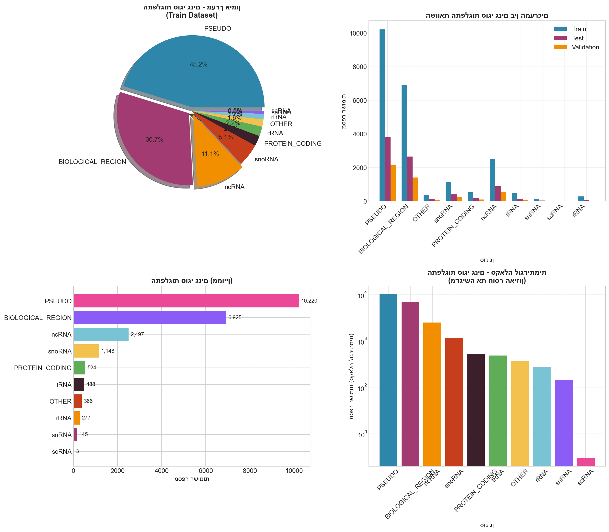
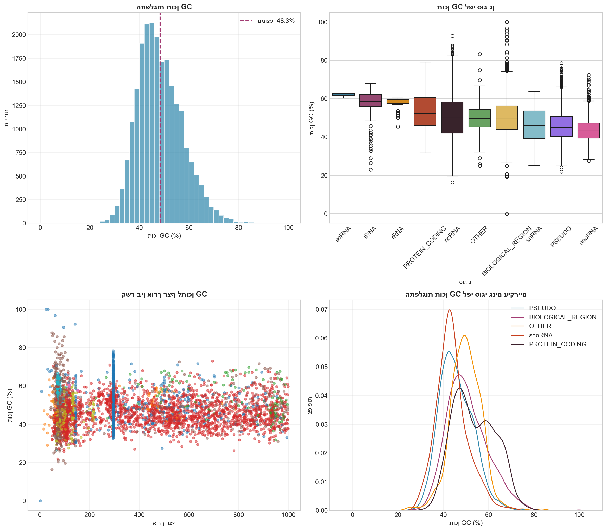
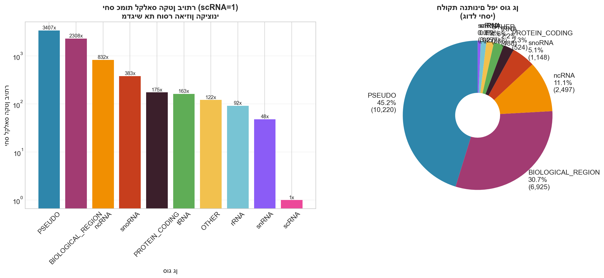
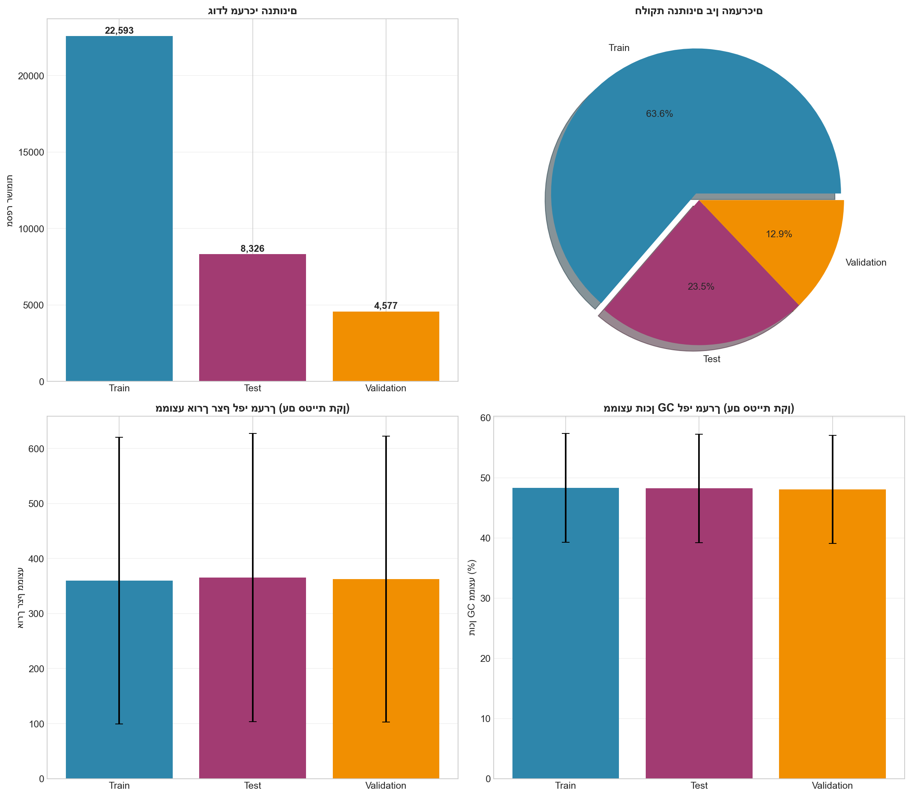
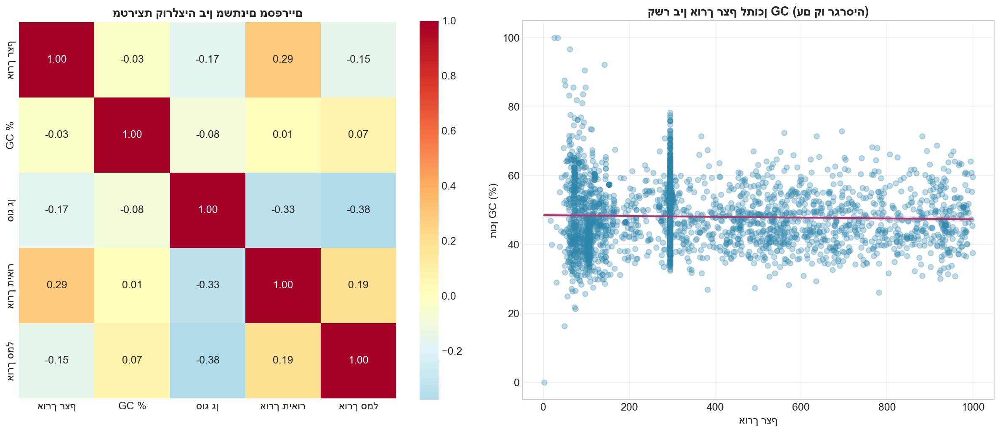
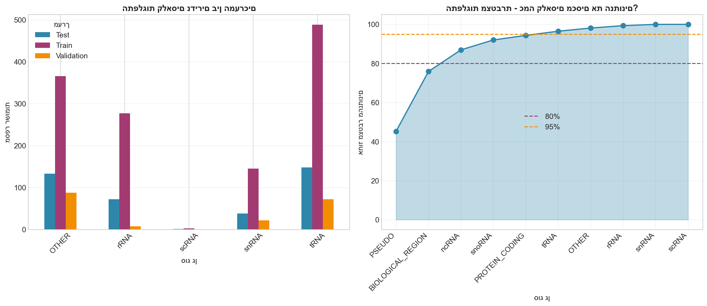
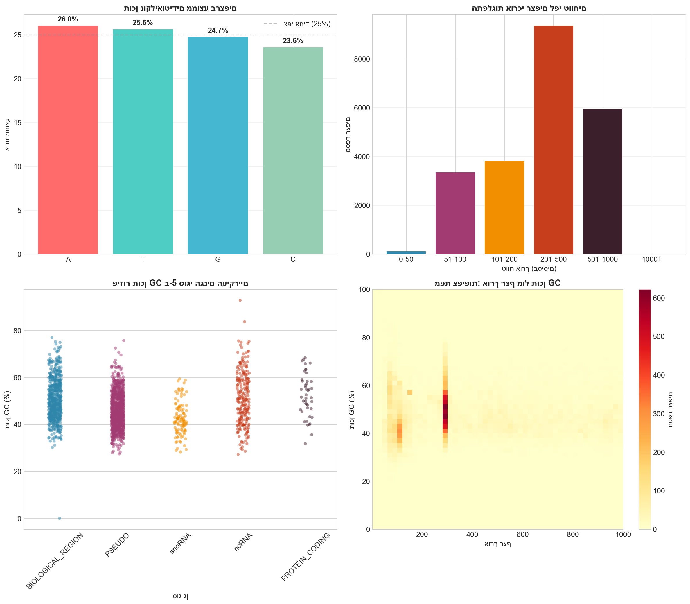

🧬 דוח סיכום ומסקנות
ניתוח מקיף של נתוני גנים | דצמבר 2024
📊 סטטיסטיקות מרכזיות
35,496
סה"כ רשומות
22,593
מערך אימון
8,326
מערך בדיקה
4,577
מערך ולידציה
10
סוגי גנים
360
אורך רצף ממוצע
48.3%
תוכן GC ממוצע
22,593
גנים ייחודיים
📈 ויזואליזציות

התפלגות סוגי גנים

ניתוח אורך רצפים

ניתוח תוכן GC

חוסר איזון קלאסים

השוואת מערכים

מפת קורלציות

ניתוח קלאסים נדירים

מאפייני רצפים
🔍 ממצאים עיקריים
התפלגות סוגי גנים
| סוג גן | כמות | אחוז |
|---|---|---|
| PSEUDO | 10,220 | 45.2% |
| BIOLOGICAL_REGION | 6,925 | 30.7% |
| ncRNA | 2,497 | 11.1% |
| snoRNA | 1,148 | 5.1% |
| PROTEIN_CODING | 524 | 2.3% |
| tRNA | 488 | 2.2% |
| OTHER | 366 | 1.6% |
| rRNA | 277 | 1.2% |
| snRNA | 145 | 0.6% |
| scRNA | 3 | 0.0% |
⚠️ בעיות שזוהו
🔴 בעיה קריטית: חוסר איזון קלאסים
קיים חוסר איזון קיצוני בין הקלאסים:
- PSEUDO ו-BIOLOGICAL_REGION מהווים יחד 76% מהנתונים
- scRNA מכיל רק 3 דוגמאות במערך האימון
- יחס הקלאס הגדול לקטן: 3,407:1
🟠 אזהרה: Data Leakage
עמודת Description מכילה מילות מפתח שחושפות את סוג הגן:
- "pseudogene" → PSEUDO (99.9%)
- "microRNA" → ncRNA (100%)
- "regulatory region" → BIOLOGICAL_REGION (100%)
🟢 נקודות חזקות
- אין ערכים חסרים בנתונים
- מבנה נתונים אחיד בכל המערכים
- NCBIGeneID ייחודי לכל רשומה
- רצפי נוקליאוטידים תקינים (A, T, G, C)
💡 מסקנות והמלצות
1. הכנת הנתונים
- להסיר: GeneGroupMethod (ערך קבוע), עמודת Index
- לא להשתמש: Description לחיזוי GeneType (Data Leakage)
- לסנן: רצפים קצרים מ-20 בסיסים
2. טיפול בחוסר איזון
- להשתמש ב-SMOTE או ADASYN להגדלת קלאסים קטנים
- להשתמש ב-Class Weights בפונקציית ההפסד
- לשקול מיזוג קלאסים נדירים (scRNA, snRNA, rRNA → smallRNA)
3. Feature Engineering
- אורך רצף - נמצאה שונות גבוהה בין סוגי גנים
- תוכן GC - מאפיין ביולוגי חשוב
- קידומת Symbol - מנבאת סוג גן ב-70-99%
- תוכן נוקליאוטידים (A%, T%, G%, C%)
4. מדדי הערכה מומלצים
- לא להשתמש ב-Accuracy - מטעה בגלל חוסר איזון
- F1-Score (macro) - ממוצע שווה על כל הקלאסים
- Confusion Matrix - לזיהוי טעויות ספציפיות
- ROC-AUC (One-vs-Rest) - להשוואת ביצועים בין קלאסים
🎯 סיכום סופי
הנתונים מכילים מידע עשיר על גנים, אך דורשים טיפול מוקדם לפני בניית מודלים:
- ✅ מבנה נתונים איכותי ומאורגן
- ✅ מגוון רחב של סוגי גנים
- ⚠️ חוסר איזון קיצוני בקלאסים
- ⚠️ Data Leakage בעמודת Description
- ⚠️ קלאסים נדירים עם דוגמאות בודדות
המלצה: לבצע ניקוי נתונים לפי ההנחיות לעיל לפני בניית מודלי Machine Learning.